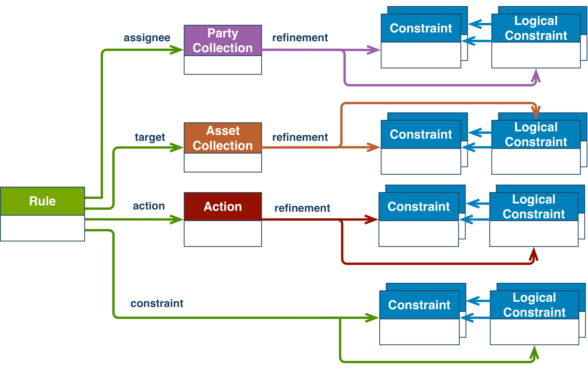

The Open Digital Rights Language (ODRL) is a policy expression language that provides a flexible and interoperable information model, vocabulary, and encoding mechanisms for representing statements about the usage of content and services. The ODRL Information Model describes the underlying concepts, entities, and relationships that form the foundational basis for the semantics of the ODRL policies.
Policies are used to represent permitted and prohibited actions over a certain asset, as well as the obligations required to be meet by stakeholders. In addition, policies may be limited by constraints (e.g., temporal or spatial constraints) and duties (e.g. payments) may be imposed on permissions.
Status of This Document
This section describes the status of this document at the time of its publication. Other documents may supersede this document. A list of current W3C publications and the latest revision of this technical report can be found in the W3C technical reports index at https://www.w3.org/TR/.
This document has been reviewed by W3C Members, by software developers, and by other W3C
groups and interested parties, and is endorsed by the Director as a W3C Recommendation.
It is a stable document and may be used as reference material or cited from another
document. W3C's role in making the Recommendation is to draw attention to the
specification and to promote its widespread deployment. This enhances the functionality
and interoperability of the Web.
This document was produced by
a group
operating under the
W3C Patent Policy.
W3C maintains a public list of any patent
disclosures
made in connection with the deliverables of
the group; that page also includes
instructions for disclosing a patent. An individual who has actual knowledge of a patent
which the individual believes contains
Essential
Claim(s) must disclose the information in accordance with
section
6 of the W3C Patent Policy.
Several business scenarios require expressing what are the permitted and prohibited actions over resources. These permitted/prohibited actions are usually expressed under the form of policies, i.e., expressions that indicate those uses and re-uses of the content which are conformant with existing regulations or to the constraints assigned by the owner. Policies may also be enriched with additional information, i.e., who are the entities in charge of the definition of such Policy and those who are required to conform to it, what are the additional constrains to be associated with the Permissions, Prohibitions and Duties expressed by the Policy. The ability to express these concepts and relationships is important both for the producers of content, i.e., they may state in a clear way what are the permitted and the prohibited actions to prevent misuse, and for the consumers, i.e., they may know precisely what resources they are allowed to use and re-use to avoid breaking any rules, laws or the owner's constraints. This specification describes a common approach to expressing these policy concepts.
The ODRL Information Model defines the underlying semantic model for permission, prohibition, and obligation statements describing content usage. The information model covers the core concepts, entities and relationships that provide the foundational model for content usage statements. These machine-readable policies may be linked directly with the content they are associated to with the aim to allow consumers to easily retrieve this information.
1.1 Aims of the Model
The primary aim of the ODRL Information Model is to provide a standard description model and format to express permission, prohibition, and obligation statements to be associated to content in general. These statements are employed to describe the terms of use and reuse of resources. The model should cover as many permission, prohibition, and obligation use cases as possible, while keeping the policy modelling easy even when dealing with complex cases.
The ODRL Information Model is a single, consistent model that can be used by all interested parties. A single method of fulfilling a use case is strongly preferred over multiple methods, unless there are existing standards that need to be accommodated or there is a significant cost associated with using only a single method. While the ODRL Information Model is built using Linked Data principles, the design is intended to allow non-graph-based implementations.
1.2 Conformance
As well as sections marked as non-normative, all authoring guidelines, diagrams, examples,
and notes in this specification are non-normative. Everything else in this specification is
normative.
The key words MAY, MUST, MUST NOT, RECOMMENDED, SHOULD, and SHOULD NOT are
to be interpreted as described in [RFC2119].
The examples throughout the document are serialized as [json-ld]. For normative serialisations, including the JSON context, please refer to the ODRL Vocabulary and Expression [odrl-vocab].
1.3 Terminology
Policy
A group of one or more Rules
Rule
An abstract concept that represents the common characteristics of Permissions, Prohibitions, and Duties.
Action
An operation on an Asset
Permission
The ability to exercise an Action over an Asset
Prohibition
The inability to exercise an Action over an Asset
Duty
The obligation to exercise an agreed Action.
Asset
A resource or a collection of resources that are the subject of a Rule
Party
An entity or a collection of entities that undertake Roles in a Rule
Constraint
A boolean/logical expression that refines an Action and Party/Asset collection or the conditions applicable to a Rule.
ODRL Validator
A system that checks the conformance of ODRL Policy expressions, including the cardinality of properties and if they are related to types of values as defined by the ODRL Information Model, and the Information Model's validation requirements.
ODRL Evaluator
A system that determines whether the Rules of an ODRL Policy expression have meet their intended action performance.
ODRL Core Vocabulary
The set of terms that are represented by the ODRL Information Model.
ODRL Profile
A community or sector specific vocabulary that extends the ODRL Core Vocabulary with new terms to express Policies
ODRL Common Vocabulary
A set of generic terms that may be re-used by ODRL Profiles.
2. ODRL Information Model
The ODRL Information Model represents Policies that express Permissions, Prohibitions and Duties related to the usage of Asset resources. The Information Model explicitly expresses what is allowed and what is not allowed by the Policy, as well as other terms, requirements, and parties involved. The aim of the ODRL Information Model is to enable flexible Policy expressions by allowing the policy author to include as much, or as little, detail in the Policies.
The figure below shows the ODRL Information Model.
Figure 1ODRL Information Model (Also available in SVG format)
The ODRL Information Model has the following classes:
Policy - A non-empty group of Permissions (via the permission property) and/or Prohibitions (via the prohibition property) and/or Duties (via the obligation property). The Policy class is the parent class to the Set, Offer, and Agreement subclasses:
Set - a subclass of Policy that supports expressing generic Rules.
Offer - a subclass of Policy that supports offerings of Rules from assigner Parties.
Agreement - a subclass of Policy that supports granting of Rules from assigner to assignee Parties.
Asset - A resource or a collection of resources that are the subject of a Rule (via the abstract relation property). The Asset class is the parent class to:
AssetCollection - a subclass of Asset that identifies a collection of resources.
Party - An entity or a collection of entities that undertake Roles in a Rule (via the abstract function property). The Party class is the parent class to:
PartyCollection - a subclass of Party that identifies a collection of entities.
Action - An operation on an Asset.
Rule - An abstract concept that represents the common characteristics of Permissions, Prohibitions, and Duties.
Permission - The ability to exercise an Action over an Asset. The Permission MAY also have the duty property that expresses an agreed Action that MUST be exercised (as a pre-condition to be granted the Permission).
Prohibition - The inability to exercise an Action over an Asset.
Duty - The obligation to exercise an Action.
Constraint/LogicalConstraint - A boolean/logical expression that refines an Action and Party/Asset collection or the conditions applicable to a Rule.
The ODRL Information Model includes property relationships between the classes. Most are explicitly named properties and some are abstract properties (specifically, relation, function, operand, and failure). The abstract properties are generic parent properties that are designed to be represented by child properties (sub-types) with explicit semantics.
For example, the two properties relation and function in Figure 1 are designed to represent the conceptual relation between the Rule and the Asset and Party classes.
The figure shows the relation property with subtype target to express that the Asset is the primary subject of the Rule. The function property has subtype assigner to express the Party issuing the Rule, and subtype assignee to express the recipient Party of the Rule.
Note
The ODRL Information Model provides a logical view of the components of the Policy model. The implementable view of the ODRL Information Model is provided by various encoding serialisations as normatively described in the ODRL Vocabulary & Expression document [odrl-vocab]. The mapping of the logical Information Model components to the implementable serialisations may require some trade-offs and/or differences depending on the features supported by the serialisation language.
The following sections provide further details on the ODRL Information Model.
2.1 Policy Class
The Policy class has the following properties:
A Policy MUST have one uid property value (of type IRI [rfc3987]) to identify the Policy.
A Policy MUST have at least one permission, prohibition, or obligation property values of type Rule. (See the Permission, Prohibition, and Obligation sections for more details.)
A Policy MAY have none, one, or many profile property values (of type IRI [rfc3987]) to identify the ODRL Profile that this Policy conforms to. (See the ODRL Profiles section for more details.)
A Policy MAY have none, one, or many inheritFrom property values (of type IRI [rfc3987]) to identify the parent Policy from which this child Policy inherits from. (See the ODRL Inheritance section for more details.)
A Policy MAY have none or one conflict property values (of type ConflictTerm) for Conflict Strategy Preferences indicating how to handle Policy conflicts.(See the Policy Conflict Strategy section for more details.)
An ODRL Policy MAY also declare properties which are shared and common to all its Rules. Specifically; action properties, sub-properties of relation (such as target), and sub-properties of function (such as assigner and assignee).
See section Compact Policy for validation requirements on these shared properties.
An ODRL Policy must either:
Only use terms defined in the ODRL Core Vocabulary [odrl-vocab], or
Use an ODRL Profile that declares the supported vocabulary used by expressions in the Policy.
In the latter case, the profile property MUST be used to indicate the IRIs of the ODRL Profile(s).
See the ODRL Profiles section for more details on mechanisms to define ODRL Profiles and conformance requirements. (The Examples in this document will use ODRL Profile identifiers for illustrative purposes only.)
An ODRL Policy MAY be subclassed to more precisely describe the context of use of the
Policy that MAY include additional constraints that ODRL processors MUST understand. Additional Policy subclasses MAY be documented in the ODRL Common Vocabulary [odrl-vocab] or in ODRL Profiles. A Policy class MUST be disjoint will all Policy subclasses (except for Set).
2.1.1 Set Class
An ODRL Policy of subclass Set represents any combination of Rules. The Set Policy subclass is also the default subclass of Policy (if none is specified).
Example Use Case: The below Set Policy shows the Permission to use the target Asset http//example.com/asset:9898.movie.
For the examples in this document, the ODRL Policy subclasses are mapped to the JSON-LD @type tokens. The above example could have also used Policy type instead of Set type (as they are equivalent).
The above example does not use the profile property as all the terms are defined by the ODRL Core Vocabulary [odrl-vocab].
2.1.2 Offer Class
An ODRL Policy of subclass Offer represents Rules that are being offered from assigner Parties. An Offer is typically used to make available Policies to a wider audience, but does not grant any Rules.
An ODRL Policy of subclass Offer:
MUST have one assigner property value (of type Party) to indicate the functional role in the same Rules.
Note: See the Function Property section for details on the functional roles.
Note: The above property cardinalities reflect the normative ODRL Information Model. In some cases, repeat occurrences of some properties are also supported (as described in Policy Rule Composition and Compact Policy) but the normative atomic Policy is consistent with the above property cardinalities.
Example Use Case: The below Offer Policy (based on the previous example) shows the Permission to play the target Asset http//example.com/asset:9898.movie from the assigner Party http://example.com/party:org:abc.
The above example uses the profile property to indicate that the terms used are defined by the ODRL Profile identified by http://example.com/odrl:profile:01. See the ODRL Profiles section for more details.
2.1.3 Agreement Class
An ODRL Policy of subclass Agreement represents Rules that have been granted from assigner to assignee Parties. An Agreement is typically used to grant the terms of the Rules between the Parties.
An ODRL Policy of subclass Agreement:
MUST have one assigner property value (of type Party) to indicate the functional role in the same Rules.
MUST have one assignee property value (of type Party) to indicate the functional role in the same Rules.
Note: See the Function Property section for details on the functional roles.
Note: The above property cardinalities reflect the normative ODRL Information Model. In some cases, repeat occurrences of some properties are also supported (as described in Policy Rule Composition and Compact Policy) but the normative atomic Policy is consistent with the above property cardinalities.
Example Use Case: The below Agreement Policy (based on the previous example) shows granting the Permission to play the target Asset http//example.com/asset:9898.movie from the assigner Party http://example.com/party:org:abc for the assignee Party http://example.com/party:person:billie.
An Asset class is a resource or a collection of resources that are the subject of a Rule. The Asset can be any form of identifiable resource, such as data/information, content/media, applications, services, or physical artefacts. Furthermore, it can be used to represent other Asset classes that are needed to undertake the Policy expression, such as with a Duty. An Asset is referred to by the Permission and/or Prohibition, and also by the Duty.
The Asset class has the following properties:
An Asset SHOULD have one uid property value (of type IRI [rfc3987]) to identify the Asset.
An Asset MAY have none, one, or many partOf property values (of type AssetCollection) to identify the AssetCollection that this Asset is in a collection of.
Note
If an Asset does not assert an identifier using the uid property, then the full implications must be understood, such as the impact on ODRL Validators and Evaluators of ODRL Policies.
The Asset class has the following subclass:
AssetCollection - an Asset that is a single resource representing a set of member resources. This indicates that all the members of the set will be the subject of the Rule.
An AssetCollection class has the following properties:
An AssetCollection MAY have one source property value (of type IRI [rfc3987]) to reference the AssetCollection.
Since ODRL Policies could deal with any kind of Asset, the ODRL Information Model does not provide additional metadata to describe Assets of particular media types. It is recommended to use existing metadata standards, such as Dublin Core Metadata Terms that are appropriate to the Asset type or purpose.
2.2.1 Relation Property
The abstract relation property is used to create an explicit link between an Action and an Asset, indicating how the Asset MUST be utilised in respect to the Rule that links to it.
An ODRL validator MUST support the following sub-properties of relation:
target: indicates that the Asset is the primary subject to which the Rule action directly applies.
Additional relation subtype properties MAY be defined in the ODRL Common Vocabulary [odrl-vocab] and ODRL Profiles.
Example Use Case: The assigner Party http//example.com/party:0001 offers to display the target Asset http://example.com/asset:3333.
In the above example, the JSON-LD representation for the relation property directly uses target as the token, as this has been defined as a subtype of the parent relation property.
Example Use Case: The below Policy shows the index action Permission on the target Asset http://example.com/archive1011. The target asset is also declared as an AssetCollection to indicate the resource is a collection of resources. An additional Asset relation summary indicates the Asset http://example.com/x/database that the indexing output should be stored in. The ODRL Profile ttp://example.com/odrl:profile:03 defines this new sub-property of relation.
The partOf property is used to identify an AssetCollection that an Asset resource is a member of. The purpose is to explicitly express membership relationships between Assets and AssetCollections. This enables a Rule that is related to an AssetCollection to understand which individual Assets the Rule may apply to. In addition, the Asset/AssetCollection membership relationships may potentially detect conflicts in Rules.
Example Use Case: The below snippet shows some Dublin Core metadata describing a document. The odrl:partOf property asserts that the Asset http://example.com/asset:111.doc is a member of the http://example.com/archive1011 AssetCollection which is used in the Policy in the example above. This means that http://example.com/asset:111.doc is one of the target Assets in the Policy and can my indexed.
An ODRL Policy class MAY also be referenced by the hasPolicy property. This supports ODRL Policy Rules being the object of external metadata expressions (that identifies an Asset). When hasPolicy has been asserted between a metadata expression and an ODRL Policy, the Asset being identified MUST be inferred to be the target Asset of all the Rules of that Policy. If there are multiple Rules in the Policy, then the inferred Asset will be the target Asset to every Rule in the Policy.
Example Use Case: The below snippet shows some Dublin Core metadata describing a movie Asset. The odrl:hasPolicy property links to the ODRL Policy http://example.com/policy:1010 (this is the Set Policy described above). In this case, the Asset http://example.com/asset:9999.movie is now also the target Asset for the Permission in Policy http://example.com/policy:1010. If there were additional Rules in this Policy, then the same Asset would be the target Asset to each Rule.
A Party Class is an entity or a collection of entities that undertake functional roles in a Rule, such as a person, collection of people, organisation, or agent. An agent is a person or thing that takes an active role or produces a specified effect. The Party performs (or does not perform) Actions or has a function in a Duty (i.e., assigns the Party to the Rule by associating it with the function it plays in the Rule).
The Party class has the following properties:
A Party SHOULD have one uid property value (of type IRI [rfc3987]) to identify the Party.
A Party MAY have none, one, or many partOf property values (of type PartyCollection) to identify the PartyCollection that this Party is a member of.
Note
If a Party does not assert an identifier using the uid property, then the full implications must be understood, such as the impact on ODRL Validators and Evaluators of ODRL Policies.
The Party class has the following subclass:
PartyCollection - a Party that is a single entity representing a set of member entities. This indicates that all the members of the set will undertake the same functional role in the Rule.
The PartyCollection class has the following properties:
A PartyCollection MAY have one source property value (of type IRI [rfc3987]) to reference the PartyCollection.
The ODRL Information Model does not provide additional metadata for the Party class. It is recommended to use existing metadata standards, such as the W3C vCard Ontology [vcard-rdf] or FOAF Vocabulary [foaf].
2.3.1 Function Property
A function property is used to link a Rule to a Party, indicating the function undertaken by the Party in respect to the Rule that links to it. The function property itself is abstract; sub-properties represent explicit semantics of the functional role between the Party and the Rule.
An ODRL validator MUST support the following sub-properties of function:
assigner: indicates the Party that is issuing the Rule. For example, the Party granting a Permission or requiring an agreed Duty to be fulfilled.
assignee: indicates that the Party that is the recipient the of Rule. For example, the Party being granted a Permission or required to fulfil an agreed Duty.
Additional function subtype properties MAY be defined in the ODRL Common Vocabulary [odrl-vocab] and ODRL Profiles.
Example Use Case: The Policy shows an Agreement with two Parties with the functional roles of the assigner and the assignee. The assigner grants the assignee the play action over the target asset.
In the above example, the JSON-LD representation for function directly uses assigner and assignee as the token, as this has been defined as sub-properties of the parent function property.
Example Use Case: The Policy shows an Agreement with two Parties with the functional roles of the assigner and the assignee. The assigner grants the assignee the use of the target asset. In this case, the assigner is explicitly declared as a Party as well as a vcard:Organisation and some additional external properties. The assignee is explicitly declared as a PartyCollection as well as a vcard:Group and some additional external properties. This implies that all the entities that are identified as http://example.com/team/A will each have the same granted action
The partOf property is used to identify a PartyCollection that a Party entity is a member of. The purpose is to explicitly express membership relationships between Parties and PartyCollections. This enables a Rule that relates to a PartyCollection to understand which individual Parties the Rule may apply to. In addition, the Party/PartyCollection membership relationships may potentially detect conflicts in Rules.
Example Use Case: The below snippet shows some vCard metadata describing a Party. The odrl:partOf property asserts that the Party http://example.com/person/murphy is a member of the http://example.com/team/A PartyCollection which is used in the Policy in the example above. This means that http://example.com/person/murphy is an assignee and can use the target asset in the Policy.
An ODRL Policy class MAY also be referenced by the assignerOf and assigneeOf properties. This supports ODRL Policy Rules being the object of external metadata expressions (that identifies a Party). When assignerOf has been asserted between a metadata expression and an ODRL Policy, the Party being identified MUST be inferred to undertake the assigner functional role of all the Rules of that Policy. When assigneeOf has been asserted between a metadata expression and an ODRL Policy, the Party being identified MUST be inferred to undertake the assignee functional role of all the Rules of that Policy.
If there are multiple Rules in the Policy, then the inferred Party will undertake the functional role to every Rule in the Policy.
Example Use Case: The below snippet shows some vCard metadata describing an individual Party. The odrl:assigneeOf property links to the ODRL Policy http://example.com/policy:1011 (this is the Offer Policy described above). In this case, the Party http://example.com/person/billie is now also the assignee of the Permission in Policy http://example.com/policy:1011. If there were additional Rules in this Policy, then the same Party would be the assignee for each Rule.
An Action class indicates an operation that can be exercised on an Asset. An Action is associated with the Asset via the action property in a Rule.
The Rule provides the specific interpretations of the Action. For example; an Action is permitted to be exercised on the target Asset when related to a Permission. When related to a Prohibition, the Action indicates the operation that is prohibited to be exercised on the target Asset. When related to a Duty, the Action indicates the agreed operation that is obligatory to be fulfilled by a Party
The ODRL Information Model defines the following top-level Actions:
use - actions that involve general usage by parties.
transfer - actions that involve in the transfer of ownership to third parties.
The Action class has the following properties:
An Action MAY have none, one or more refinement property values (of type Constraint) that refine the semantics of the Action operation. See Constraints section for more details.
An Action (except for use and transfer) MUST have one includedIn property value (of type Action) to transitively assert this Action that encompasses its operational semantics.
An Action MAY have none, one or more implies property values (of type Action) to assert this Action is not prohibited to enable its operational semantics.
Action terms MUST be defined using the includedIn property referring to an encompassing Action and either use or transfer as the top-level parent term by transitive means.
The purpose of the includedIn property is to explicitly assert that the semantics of the referenced instance of an other Action encompasses (includes) the semantics of this instance of Action. The includedIn property is transitive, and as such, the Actions form ancestor relationships.
The implication of the includedIn property is that a Permission or Prohibition of an encompassing Action is inherited by all Actions with an includedIn relationship.
For example, if the play Action is defined as includedIn with use then if play is permitted in a Policy and use is prohibited in the same Policy - and both Actions apply to the same target Asset - then because of this asserted relationship between the two, there is conflict in the Policy. (See Policy Conflict Strategy for more details.)
The implies property asserts that an instance of Action entails that the other instance of Action is not prohibited. The implies property can establish such an assertion between two Action instances if they don't have an includedIn relationship.
For example, if a share Action implies explicitly the distribute Action, then if share is permitted in a Policy and distribute is prohibited in the same Policy - and both Actions apply to the same target Asset - this would cause a conflict in the Policy. If an implied other action is not prohibited then this will not cause a conflict.
(See Policy Conflict Strategy for more details.)
See ODRL Profiles for usage details on the includedIn and implies properties.
The ODRL Common Vocabulary [odrl-vocab] defines a standard set of generic Actions that MAY be adopted by ODRL Profiles.
Example Use Case: The Policy expresses an Offer for the target Asset http://example.com/music:1012 with the Action to play the Asset (play is defined as an includedIn term of use).
Constraints are boolean/logical expressions that can be used to refine the semantics of an Action and Party/Asset Collection or declare the conditions applicable to a Rule. Constraints can be represented as a Constraint class or Logical Constraint class. A Logical Constraint will refer to existing Constraints as its operands. When multiple Constraints apply to the same Rule, Action, Party/Asset Collection, then they are interpreted as conjunction and all MUST be satisfied.
The Constraint and Logical Constraint classes form semantic and conditional relationships with the Party Collection, Asset Collection, Action, and Rule classes. The property relationships are summarised in the figure below.

Figure 2ODRL Constraint Relationships (Also available in SVG format)
2.5.1 Constraint Class
A Constraint class is used for expressions which compare two operands (which are not Constraints) by one relational operator. If the comparison returns a match the Constraint is satisfied, otherwise it is not satisfied. The Constraint class formulates a comparison expression, such as, the number of usages (the leftOperand) must be smaller than (the operator) the number 10 (the rightOperand).
The Constraint class has the following properties:
A Constraint MAY have none or one uid property value (of type IRI [rfc3987]) to identify the Constraint.
A Constraint MUST have one leftOperand property value of type LeftOperand.
A Constraint MUST have one operator property value of type Operator.
A Constraint MAY have none or one dataType property value for the data type of the rightOperand/Reference.
A Constraint MAY have none or one unit property value (of type IRI [rfc3987]) to set the unit used for the value of the rightOperand/Reference.
A Constraint MAY have none or one status property value for a value generated from the leftOperand action or for a value related to the leftOperand set as the reference for the comparison.
The leftOperand property values are defined as instances of the LeftOperand class. The leftOperand instances MUST clearly be defined to indicate the semantics of the Constraint, and MAY declare how the value for comparison has to be retrieved or generated. The ODRL Common Vocabulary [odrl-vocab] defines leftOperand's that MAY be used by ODRL Profiles.
The operator property values are defined as instances of the Operator class. The operator instances identify the relational operation such as “greater than” or “equal to” between the left and right operands.
The rightOperand property values are defined as instances of the RightOperand class, or IRIs, or Literal values. The rightOperand is the value of the Constraint that is to be compared to the leftOperand. The rightOperandReference represents an IRI that MUST be de-referenced first to obtain the actual value of the rightOperand. A rightOperandReference is used in cases where the value of the rightOperandMUST be obtained from dereferencing an IRI first. Only one of rightOperand or rightOperandReferenceMUST appear in the Constraint.
The rightOperand represents a value and the rightOperandReference represents an IRI that must be de-referenced to obtain the value. If the rightOperand was http://example.com/c100 then that is interpreted as the value to be compared in the expression. If the rightOperandReference was the same value of http://example.com/c100, then that IRI must be de-referenced first and the data returned must be interpreted as the value to be compared in the expression.
The dataType indicates the type of the rightOperand/Reference, such as xsd:decimal or xsd:datetime and the unit indicates the unit value of the rightOperand/Reference, such as “EU currency”.
The status provides a value generated from the leftOperand action that MUST be used in the comparison expression. For example, a count constraint could have a rightOperand value of 10, and the status of 5. This means that the action has already been exercised 5 times and the comparison must compare the current action to the status value.
2.5.2 Logical Constraint Class
A Logical Constraint class is used for expressions which compare two or more operands which are existing Constraints by one logical operator. If the comparison returns a logical match, then the Logical Constraint is satisfied, otherwise it is not satisfied. For example, three Constraints could be logically and-ed indicating that all three must be true for the Logical Constraint to be satisfied.
The Logical Constraint class has the following properties:
A Logical Constraint MAY have none or one uid property value (of type IRI [rfc3987]) to identify the Logical Constraint.
A Logical Constraint MUST have one operand sub-property indicating the logical relationship of the compared existing constraints; its value is a list of the existing Constraint instances.
An ODRL evaluator MUST support the following sub-properties of operand:
or - at least one of the Constraints MUST be satisfied
xone - only one, and not more, of the Constraints MUST be satisfied
and - all of the Constraints MUST be satisfied
andSequence - all of the Constraints - in sequence - MUST be satisfied
Additional operand sub-properties MAY be defined by ODRL Profiles.
The ODRL validation requirements for Logical Constraints includes:
The operandMUST only be of the sub-properties; or, xone, and, andSequence. Additional sub-properties of operandMAY be defined by ODRL Profiles exclusively for the use of Logical Constraints.
All of the operand values MUST be unique Constraint instances.
The Constraint instances MUST be evaluated and the outcomes used to determine if the logical relationship is satisfied (based on the semantics of the operand sub-property).
Note
When using a logical operand that needs to be evaluated in sequence, such as andSequence, the serialisations MUST preserve the order of the members of the list. In JSON-LD, the @list keyword MUST be used to represent an ordered collection.
2.5.3 Constraint property with a Rule
An Rule (such as a Permission, Prohibition, or Duty) MAY include the constraint property to indicate a condition on the Rule.
To meet this condition, all of the the Constraints/Logical Constraints referenced by the constraint property MUST be satisfied.
Example Use Case: In the Policy Offer example below, the permission allows the target asset to be distributed, and includes a constraint of a dateTime condition that the permission can only be exercised until 2018-01-01.
An Action MAY include the refinement property to indicate a Constraint/Logical Constraint that narrows the semantics of the Action operation directly.
To meet this condition of narrower semantics for the Action, all of the Constraints/Logical Constraints referenced by the refinement property MUST be used as generating a satisfied state.
Note: The outcome of applying refinements to an Action SHOULD NOT result in a null operation.
Example Use Case: In the Policy Offer example below, the permission allows the target asset to be printed, and also include a refinement Constraint of less than or equal to 1200 dpi resolution. The refinement is a more narrower semantic of printing, in this case, printing at a specific maximum resolution level.
Example Use Case:The Policy below shows a permission to reproduce the target asset either via online media or print media but not both. This is expressed as a Logical Constraint (with the xone operand) referring to two existing Constraints declared elsewhere.
When using the refinement property with an Action, the rdf:value property is used to represent the instance of the Action which MUST use its namespace identifier (eg odrl), and assert it is an @id key. In addition, identifiers of Constraint instances (for logical constraint operands) must assert them as an @id key.
2.5.5 Refinement property with an Asset Collection
An AssetCollectionMAY include a refinement property to indicate the refinement context under which to identify individual Asset(s) of the complete collection. The refinement property applies to the characteristics of each member of the collection (and not the resource as a whole).
To meet this condition of identifying individual Asset(s) of the complete AssetCollection, all of the Constraints/Logical Constraints referenced by the refinement property MUST be satisfied.
Note: The outcome of applying refinements to an AssetCollection SHOULD NOT result in a null set.
Note that when using the refinement property, the uid property MUST NOT be used to identify the AssetCollection. Instead, the source property MUST be used to reference the AssetCollection.
Example Use Case: The Policy defines a target source http://example.com/media-catalogue that is an AssetCollection of multimedia videos. The target also has a refinement that specifies the characteristics of the AssetCollection members. In this case, the target subset of Assets will be those that have a running time of less than 60 minutes, and each of those may be played. Note that the runningTime leftOperand is defined in the ODRL Profile http://example.com/odrl:profile:11 together with the play action.
A PartyCollectionMAY include a refinement property to indicate the refinement context under which to identify individual Party(ies) of the complete collection. The refinement property applies to the characteristics of each member of the collection (and not the resource as a whole).
To meet this condition of identifying individual Party(ies) of the complete PartyCollection, all of the Constraints/Logical Constraints referenced by the refinement property MUST be satisfied.
Note: The outcome of applying refinements to a PartyCollection SHOULD NOT result in a null set.
Note that when using the refinement property, the uid property MUST NOT be used to identify the PartyCollection. Instead, the source property MUST be used to reference the PartyCollection.
Example Use Case: The target Asset http://example.com/myPhotos:BdayParty is a set of photos posted to a social network site by the assigner of the photos http://example.com/user44. The assignee source is a PartyCollection http://example.com/user44/friends and represents all the friends of the assigner.
The assignee also has a refinement that indicates only members of the collection over the foaf:age of 18 will be assigned the ex:view permission (defined by the Profile).
The Rule class is the parent of the Permission, Prohibition, and Duty classes. The Rule class represents the common characteristics of these three classes. A Rule class MUST be disjoint with all other Rule subclasses.
The Rule class has the following properties:
A Rule MUST have one action property value of type Action.
A Rule MAY have none or one relation sub-property values of type Asset.
A Rule MAY have none, one or many function sub-property values of type Party.
A Rule MAY have none, one or many failure sub-property values of type Rule.
A Rule MAY have none, one or many constraint property values of type Constraint/LogicalConstraint.
A Rule MAY have none or one uid property values (of type IRI [rfc3987]) to identify the Rule so it MAY be referenced by other Rules.
Note: The above property cardinalities reflect the normative ODRL Information Model. In some cases, repeat occurrences of some properties are also supported (as described in Policy Rule Composition and Compact Policy) but the normative atomic Policy is consistent with the above property cardinalities.
Explicit sub-properties of the abstract relation, relation and failure properties must be used, the choice depending on the subclass of Rule in question.
The three classes of Rules also form important relationships with the Duty Rule. The property relationships are summarised in the figure below.
Figure 3ODRL Rule Relationships (Also available in SVG format)
2.6.1 Permission Class
A Permission allows an action, with all refinements satisfied, to be exercised on an Asset if all constraints are satisfied and if all duties are fulfilled.
The Permission class is a subclass of, and inherits all the properties from, the Rule class - and has the following additional property semantics:
A Permission MUST have one target property value of type Asset. (Other relation sub-properties MAY be used.)
A Permission MAY have none or one assigner and/or assignee property values (of type Party) for functional roles. (Other function sub-properties MAY be used.)
A Permission MAY have none, one, or more duty property values of type Duty.
Note: The above property cardinalities reflect the normative ODRL Information Model. In some cases, repeat occurrences of some properties are also supported (as described in Policy Rule Composition and Compact Policy) but the normative atomic Policy is consistent with the above property cardinalities.
The duty property expresses an agreed obligation that MUST be fulfilled. That is, the duty property asserts a pre-condition between the Permission and the Duty. See the Duty with a Permission section for more details.
Example Use Case: The Policy Offer from assigner http://example.com/org:xyz expresses the play action for the target Asset http//example.com/game:9090 and the permission is valid until the end of the year 2017.
A Prohibition disallows an action, with all refinements satisfied, to be exercised on an Asset if all constraints are satisfied. If the Prohibition has been infringed by the action being exercised, then all of the remedies MUST be fulfilled to set the state of the Prohibition to not infringed.
The Prohibition class is a subclass of, and inherits all the properties from, the Rule class - and has the following additional property semantics:
A Prohibition MUST have one target property value of type Asset. (Other relation sub-properties MAY be used.)
A Prohibition MAY have none or one assigner and/or assignee property values (of type Party) for functional roles. (Other function sub-properties MAY be used.)
A Prohibition MAY have none, one, or more remedy property values of type Duty.
Note: The above property cardinalities reflect the normative ODRL Information Model. In some cases, repeat occurrences of some properties are also supported (as described in Policy Rule Composition and Compact Policy) but the normative atomic Policy is consistent with the above property cardinalities.
The remedy property (a sub-property of the failure property) expresses an agreed obligation that MUST be fulfilled in the case that the Prohibition has been infringed. That is, the remedy property asserts a Duty that must be fulfilled if the action of the Prohibition is exercised. See the Remedy with a Prohibition section for more details.
Example Use Case: The assigner of a target Asset http://example.com/photoAlbum:55 expresses an Agreement Policy with both a Permission and a Prohibition. The assigner Party http://example.com/MyPix:55 assigns the Permission display to the assignee Party http://example.com/assignee:55 at the same time a Prohibition to archive the target Asset. Additionally, in case of any conflicts in the Policy (e.g., between Permissions and Prohibitions), the conflict property of the Policy is set to perm indicating that the Permissions will take precedence.
A Duty is the obligation to exercise an action, with all refinements satisfied. A Duty is fulfilled if all constraints are satisfied and if its action, with all refinements satisfied, has been exercised. If its action has not been exercised, then all consequences must also be fulfilled to fulfil the Duty. That is, consequences are additional Duties that must also be fulfilled. (Note: only Duties referenced by duty or obligation properties may use consequence properties.)
The Duty class is a subclass of, and inherits all the properties from, the Rule class - and has the following additional property semantics:
A Duty MAY have none or one target property values (of type Asset) to indicate the Asset that is the primary subject to which the Duty directly applies. (Other relation sub-properties MAY be used.)
A Duty MAY have none or one assigner and/or assignee property values (of type Party) for functional roles. (Other function sub-properties MAY be used.)
A Duty MAY have none, one or many consequence property values of type Duty only when the Duty is referenced by a Rule with the duty or obligation properties.
Note: The above property cardinalities reflect the normative ODRL Information Model. In some cases, repeat occurrences of some properties are also supported (as described in Policy Rule Composition and Compact Policy) but the normative atomic Policy is consistent with the above property cardinalities.
The Duty class also has these additional requirements:
The Party obligated to perform the duty MUST have the ability to exercise the Duty Action.
The Party obligated to perform the duty MUST satisfy the Duty.
The consequence property (a sub-property of the failure property) is utilised to express the repercussions of not fulfilling an agreed Policy obligation or duty for a Permission. If either of these fails to be fulfilled, then this will result in the consequence Duties also becoming new requirements, meaning that the original obligation or duty, as well as the consequence Duties MUST all be fulfilled.
Note
In some cases, to fulfil the original duty/obligation that triggered a consequence, some constraints and/or refinements on the original duty/obligation MAY be required to be relaxed if they are no longer able to be satisfied.
For example, if an obligation to provide data by a fixed date is not fulfilled, then a consequence of a $100 fine is payable as well. If the date has passed, then the original duty is technically not able to be fulfilled (as the date constraint cannot be satisfied).
In such cases, ODRL implementations SHOULD provide mechanisms to allow the original duty/obligation to be satisfiable post triggering a consequence.
Note that the consequence property MUST NOT be used on a Duty that is already a consequence for a Permission duty or Policy obligation.
2.6.4 Obligation property with a Policy
A Policy MAY include an obligation to fulfil a Duty. The obligation is fulfilled if all constraints are satisfied and if its action, with all refinements satisfied, has been exercised.
Example Use Case: The below Agreement includes an obligation from assigner http://example.com/org:43 to assignee http://example.com/person:44 to compensate the assigner for a payment amount of EU500.00.
A Policy MAY also include a consequence of not fulfilling an obligation.
Example Use Case: The below Agreement includes an obligation from assigner http://example.com/org:43 to assignee http://example.com/person:44 to delete the target Asset. If the obligation is not fulfilled, then a consequence is that the assigner MUST now also compensate the nominated charity with a payment of EU10.00 (as well as the fulfill the obligation Duty).
A Duty MAY be specified as a pre-condition that requires fulfillment using the duty property relationship from the Permission to the Duty.
If a Permission has several Duties then all of the Duties MUST be agreed to be fulfilled. If several Permissions refer to the same Duty (via its uid property), then the Duty only has to be fulfilled once.
If there are no function sub-properties declared in the Duty, then these functional roles will be the same as those declared in the referring Permission.
Example Use Case: The Party http://example.com/assigner:sony makes an Offer to play the target asset http://example.com/music/1999.mp3. The permission includes a duty for the compensate action that has a refinement of payAmount of $EU5.00. The duty also has a constraint of event is less than policyUsage, meaning the duty rule must be exercised (ie the compensation) before the permission rule can be exercised.
2.6.6 Consequence property with a Permission/Obligation Duty
A duty of a Permission, and obligation of a Policy, MAY include a consequence Duty of not fulfilling that duty or obligation.
In this case, all consequence Duties MUST also be fulfilled to set the final state of the Permission/Obligation Duty to fulfilled.
The consequence property is a sub-property of the failure property. See the Duty Class section for more about the consequence property.
Example Use Case: The below Agreement between assigner http://example.com/org:99 and assignee http://example.com/person:88 allows the assignee to distribute the Asset http://example.com/data:77 under the pre-condition they attribute the asset to Party http://australia.gov.au/. If the assignee does not fulfil the duty, or distributes the asset without fulfilling the duty, then the consequence will be that they will also be tracked by http://example.com/dept:100.
The remedy property expresses an agreed Duty that MUST be fulfilled in case that a Prohibition has been infringed by being exercised. If the Prohibition action is exercised, then all remedy Duties MUST be fulfilled to address the infringement of the Prohibition and set it to the state not infringed. The remedy property is a sub-property of the failure property.
A remedy MUST NOT refer to a Duty that includes a consequence Duty.
Example Use Case: The below Agreement between assigner http://example.com/person:88 and assignee http://example.com/org:99 prohibits the assignee to index the Asset http://example.com/data:77. If the assignee does actually index the target asset, then the remedy will be that they MUST anonymize the target asset http://example.com/data:77.
The ODRL Information Model provides the normative cardinalities for property relationships to Rules. At the core level, an ODRL Rule would be related to one Asset, one or more Party functional roles, one Action (and potentially to Constraints and/or Duties)
The Policy Rules Composition permits each Rule to extend the cardinality requirements of the ODRL Information Model to support a Rule being related to multiple Assets, Parties, and Actions. The purpose is to combine common properties (in a single Rule) to express a more compound Policy. The Policy SHOULD then be processed into its normative atomic equivalent.
The example below shows the atomic level of a Policy where it is an irreducible Rule (that is, not able to be reduced or further simplified).
In order to create the atomic Rules in a Policy, the ODRL validation requirements for Rules with multiple Assets, Parties, and Actions includes:
Where there are multiple Assets (with the same relation), then replace the existing Rule by newly created Rules (one for each of these Assets) and include only one Asset relation, and include all other (non-Asset) properties, in each Rule
Where there are multiple Parties (with the same function), then replace the existing Rule by newly created Rules (one for each of these Parties) and include only one Party function, and include all other (non-Party) properties, in each Rule.
Where there are multiple Actions, then replace the existing Rule by newly created Rules (one for each of these Actions) and include only one Action, and include all other (non-Action) properties, in each Rule.
2.7.1 Compact Policy
An ODRL Policy MAY hold properties, declared at the Policy-level, which are shared and common to all its Rules. This is aimed only as a short-cut method to support more compact serialisations. These shared properties MUST NOT be interpreted as Policy-level properties (such as those defined in the Policy Class section).
Properties that MAY be shared (as shown in the figure below) include:
One or many action properties.
One or many sub-properties of relation (such as target).
One or many sub-properties of function (such as assigner and assignee).
Figure 4ODRL Shared Properties (Also available in SVG format)
The ODRL validation requirements for expanding short-cuts in a Policy is:
For each Rule in the Policy:
Verify any relevant shared properties (at the Policy-level).
Replicate these properties in the Rule.
Remove the shared properties declared at the Policy-level
Further, follow the ODRL validation requirements to create atomic Rules in the Policy (defined in the previous section).
It is RECOMMENDED that compact ODRL Policies be expanded to atomic Policies when being processed for conformance.
The example below shows such shared common properties applied to a Policy:
Additional metadata properties MAY be added to a Policy to support further authenticity, and integrity purposes from external vocabularies. The ODRL Information Model recommends the use of Dublin Core Metadata Terms [dcterms] for ODRL Policies.
The following Dublin Core Metadata Terms [dcterms] properties SHOULD be used:
none, one, or many dc:creator property values - the individual, agent, or organisation that authored the Policy.
none, one, or many dc:description property values - a human-readable representation or summary of the Policy.
none or one dc:issued property values - the date (and time) the Policy was first issued.
none or one dc:modified property values - the date (and time) the Policy was updated.
none, one, or many dc:coverage property values - the jurisdiction under which the Policy is relevant.
none or one dc:replaces property values (of type Policy) - the identifier of a Policy that this Policy supersedes.
none or one dc:isReplacedBy property values (of type Policy) - the identifier of a Policy that supersedes this Policy.
The ODRL validation requirements for Policies with the above metadata properties include:
If a Policy has the dc:isReplacedBy property, then a processor MUST consider the first Policy void and MUST retrieve and process the identified Policy.
Example Use Case: The below example shows metadata properties that indicate who created the Policy, a description, when the Policy was issued, which jurisdiction (an identifier of Queensland, Australia) the Policy applies to, and an identifier of an older version of the Policy it replaces.
Note: The string values used in the Dublin Core metadata properties are not designed for comparison of Policy metadata, as they may not be normalised.
2.9 Policy Inheritance
ODRL supports an inheritance mechanism in which a (child) Policy may inherit all the atomic Rules of one or more (parent) Policies.
The inheritFrom property MUST be used in a child Policy that is inheriting from a parent Policy and MAY include multiple identifiers of parent Policies.
The following apply when using inheritance:
Inheritance can be to any depth. (Multiple levels of children Policies.)
Inheritance MUST NOT be circular.
No constraint status information is transferred from the parent Policy to the child Policy. That is, if the parent Policy had status properties with values, then these values would be nulled.
Example Use Case: Consider the (parent) Policy http://example.com/policy:default below. It includes a (policy-level) assigner and an Obligation to review the target asset policy document.
The child AgreementPolicy http://example.com/policy:4444 below shows the inheritFrom property pointing to the parent Policy http://example.com/policy:default (above). The child Policy shows the target Asset, the actions (to display the Asset) and the assignee Party for the Agreement.
After the inheritance is performed - where the parent Policy Rules and Policy-level properties are added to the child Policy - and the Rules are made atomic - the resulting Policy is shown below. The original child Permission rule now includes the (policy-level) assigner from the parent Policy. The parent Obligation rule now appears in the updated child policy with the original child (policy-level) assignee.
The ODRL validation requirements for ODRL Policy Inheritance includes:
The child Policy MUST access the parent Policy and replicate the following in the updated child Policy:
All policy-level Assets, Parties, Actions from the parent Policy.
All profile identifiers.
Any conflict properties
All Rules from the parent Policy.
Repeat the above for each identified parent Policy.
The final updated child Policy MAY then be further expanded (into atomic Rules) by following the ODRL validation requirements defined in the Policy Composition section.
2.10 Policy Conflict Strategy
The conflict property is used to establish strategies to resolve conflicts that arise from the merging of Policies or conflicts between Permissions and Prohibitions in the same Policy. Conflicts may arise when merging Policies as a result of Policy Inheritance and the resultant Rules are inconsistent.
The conflict property SHOULD take one of the following Conflict Strategy Preference values (instance of the ConflictTerm class):
perm: the Permissions MUST override the Prohibitions
prohibit: the Prohibitions MUST override the Permissions
invalid: the entire Policy MUST be void if any conflict is detected
If the conflict property is not explicitly set, the default of invalid will be used.
Additional conflict property values MAY be defined by ODRL Profiles.
The Conflict Strategy requirements include:
If a Policy has the conflict property of perm then any conflicting Permission Rule MUST override the Prohibition Rule.
If a Policy has the conflict property of prohibit then any conflicting Prohibition Rule MUST override the Permission Rule.
If a Policy has the conflict property of invalid then any conflicting Rules MUST void the entire Policy.
If a Policy has multiple conflict property values (for example, after a Policy merge or inheritance) and there are conflicting Rules then the entire Policy MUST be void.
Example Use Case: Two Policies are associated to the same target Asset http://example.com/asset:1212. The first Policy http://example.com/policy:0001 allows to use the Asset. The second Policy http://example.com/policy:0002 allows for the display of the Asset, but it prohibits print. Both policies explicitly state how to deal with conflicts through the conflict property being set to perm. Hence the Permissions will always override any Prohibitions. In this use case, since the print Action is a specialisation of the use Action, there could be a conflict. However, the perm conflict strategy means that the use Permission will override the print Prohibition.
In the above use case, if the second Policy had the conflict value of prohibit, then the outcome would be a direct contradiction, and the result will be an void Policy.
3. ODRL Profiles
3.1 ODRL Profile Purpose
The ODRL Information Model serves as the core framework and vocabulary to express policies. The ODRL Core Vocabulary [odrl-vocab] articulates this set of vocabulary terms. An ODRL policy may be expressed using the ODRL Core Vocabulary, and this represents the minimally supported policy expression.
An ODRL Profile MUST be defined to provide vocabulary terms (as scoped in the ODRL Profile Mechanism section) that can be used in ODRL policies requiring additional semantics. An ODRL Profile explicitly serves community needs by specifying the vocabulary terms they require to be supported in ODRL policy expressions. These terms may be defined explicitly or may be adopted from the ODRL Common Vocabulary.
The ODRL Common Vocabulary [odrl-vocab] provides a generic range of common actions for Permissions, Prohibition, and Duties as well as Policy subclasses, Constraint left operands and operators, Asset relations, and Party functions.
3.2 ODRL Profile Conformance
If an ODRL Policy conforms to an ODRL Profile, then the profile property MUST be specified to indicate the identifier (IRI) of the ODRL Profile. There MAY be multiple identifiers used to indicate that an ODRL Policy conforms to multiple ODRL Profiles.
When an ODRL Profile(s) is used in an ODRL Policy, an ODRL Processing system MUST understand the semantics of the identified ODRL Profile(s). If the ODRL Processing system does not recognise the ODRL Profile identifier(s) then it MUST stop processing the policy.
3.3 ODRL Profile Mechanism
To create an ODRL Profile, direct extensions to the ODRL Core Vocabulary classes, properties, and instances are defined in the following way:
ODRL Profile Definition
Example
Additional Policy Subclasses: Create a subclass of the ODRL Policy class and define it as disjoint with all other Policy subclasses (except Set).
Additional Actions for Rules:
Create an instance of an Action and define its includedIn parent Action.
The new Action MAY be defined as includedIn to any existing Action.
If the new Action forms a dependency with another new or existing Action, then define the two actions with the implies property.
ex:myAction a odrl:Action . ex:myAction odrl:includedIn odrl:use .
ex:myAction odrl:implies odrl:distribute .
Additional Constraint left operands: Create an instance of the LeftOperand class.
ex:myLeftOperand a odrl:LeftOperand .
Additional Constraint right operands: Create an instance of the RightOperand class.
ex:myRightOperand a odrl:RightOperand .
Additional Constraint relational operators: Create an instance of the Operator class.
ex:myOperator a odrl:Operator .
Additional Logical Constraint operands: Create a sub-property of the abstract operand property.
ex:myLogicalOp rdfs:subPropertyOf odrl:operand .
Additional Policy Conflict strategies: Create an instance of the ConflictTerm class.
ex:myStrategy a odrl:ConflictTerm .
Additional Rule class: Create a subclass of the Rule class and define it as disjoint with all other Rule subclasses.
All new classes (rdfs:Class, owl:Class), properties (rdf:Property, owl:ObjectProperty), and instances (owl:NamedIndividual) must also be defined as a skos:Concept. Appropriate rdfs:domain and rdfs:range should also be defined for classes.
Human-readable documentation is also recommended for each new term using rdfs:label for the name, skos:definition for the formal definition, and skos:note for additional comments on its use.
3.4 ODRL Core Profile
In circumstances that require the ODRL Core Profile to be identified, that is the Policy only conforms to the ODRL Core Vocabulary, then the following identifier MAY be used for the Core Profile: http://www.w3.org/ns/odrl/2/core
4. Privacy Considerations
This section is non-normative.
The ODRL Information Model does not directly express sensitive personal information such as the identity of the existence of Assets containing such data related to Parties. However, ODRL vocabularies (such as the ODRL Common Vocabulary [odrl-vocab] and ODRL Profiles) may define terms that may relate to personal information. These specifications should inform implementations that produce or consume such ODRL expressions to take steps to communicate to all relevant users the manner in which the policy is being used, the identity of any other party with whom that policy is being shared, and the reason the policy is being shared with other parties.
A. Acknowledgements
The POE Working Group gratefully acknowledges the contributions of the ODRL Community Group and the earlier ODRL Initiative. In particular the editors would like to thank Susanne Guth, Daniel Paehler, and Andreas Kasten for their past editorial contributions.
B. Candidate Recommendation Exit Criteria
For this specification to be advanced to Proposed Recommendation, there must be at least two independent implementations of each feature described below. Each feature may be implemented by a different set of products, and there is no requirement that any single product implement every feature.
Features
For the purposes of evaluating exit criteria, the following are considered as features:
A Set/Offer/Agreement Policy type with required properties
A Policy that utilises an ODRL Profile
A Policy with an Asset Collection, including parts
A Policy with a Party Collection, including parts
A Policy with a Rule including a constraint property
A Policy with a Permission including a duty property
A Policy with a Permission including a duty and a consequence property
A Policy with a Prohibition
A Policy with a Prohibition including a remedy property
A Policy with an Obligation
A Policy with a refinement property on an Action, Asset and Party Collection
A Policy with a Logical Constraint
A Compact Policy that requires translation into an Atomic Policy
A Policy containing metadata
A Policy that includes Policy inheritance
A Policy that includes a Conflict Strategy
Software that does not alter its behavior in the presence or lack of a given feature is not deemed to implement that feature for the purposes of exiting the Candidate recommendation phase.
C. Relationship to the W3C ODRL Community Group Reports
The basis for the deliverables for the Permissions & Obligations Expression Working Group are the reports created by the W3C ODRL Community Group. The ODRL Community Group has developed a family of specifications to support innovative expression of asset usage for the publication, distribution and consumption of content services.
The final outputs of the ODRL Community Group were the ODRL Version 2.1 specifications that were a major update for ODRL and superseded the original ODRL Version 1.1 [odrl] (published as a W3C NOTE).
The following documents are part of the ODRL Community Group report series:
The ODRL Information Model was derived from the ODRL V2.1 Core Model Community Group report. Details of the differences between the W3C Working Group deliverables and the ODRL Community Group Reports are maintained in the Appendix. All new ODRL implementations are expected to use the deliverables of the Permissions & Obligations Expression Working Group.